Elevates the diamond, making it more prominent and noticed
Enables significant light to pass through the diamond—increasing
the stone’s brilliance and fire
Complements and supports a variety of Diamond Shapes
and sizes
Simple to clean and maintain
Offers a classic, timeless look
Cons of Solitaire Settings
Can snag on clothing, furniture and other materials,
especially if high-set (a lower-set prong may be best for those
with an active lifestyle)
May loosen with wear (we recommend having the prongs
inspected at least every two years to ensure the stone remains secure)
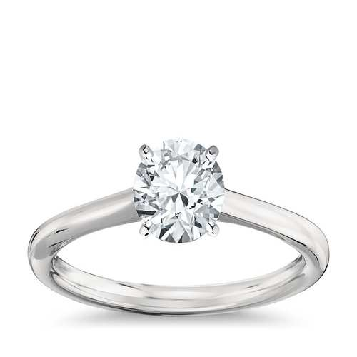
Bezal
Pros of Bezel Settings
Secures the diamond more than a prong setting, making
it an excellent choice for active lifestyles and careers
Offers a sleek, modern look
Does not snag on clothing and other materials
Protects the diamond well and prevents damage
Easy to clean and maintain (i.e. no prongs to routinely check)
Cons of Bezel Settings
Tends to hide more of the stone than a prong setting
Achieves less light reflection and brilliance than a prong setting
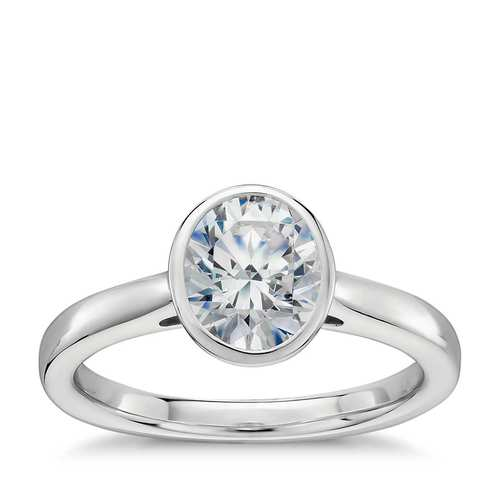
Tension
Pros of Tension Settings
Securely holds the diamond in place
Offers a unique appearance
Enhances light reflection, due to minimal metal surrounding
the diamond
Provides a modern, stylish look
Requires less maintenance than a prong setting
Cons of Tension Settings
Difficult and often expensive to resize
May cause a small Carat weight to look smaller, especially
when thick metal is used
Though extremely rare, a stone could fall out of a tension setting
if struck by an impressive outside force
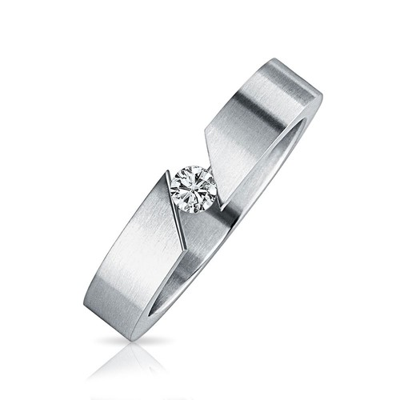
Channel
Pros of Channel Settings
Securely holds diamond and protects it from outside forces
Enhances the ring’s sparkle with side stones along the band
Achieves a sharp design without losing stability
Unlikely to snag on clothing and other materials
Cons of Channel Settings
Tends to require more time and effort with cleaning (dirt can
become trapped in the channels)
Can be challenging to repair and resize due to numerous
channels (it is possible the channels will become bent or misaligned,
or that the side stones will loosen during the repair process)
May hide diamonds slightly more than prong settings
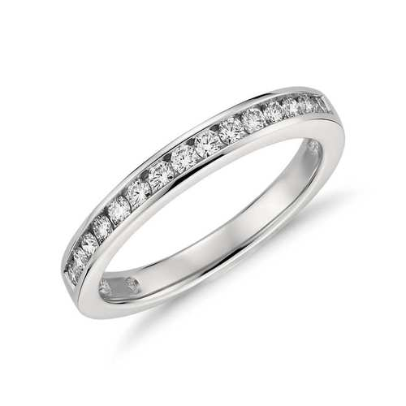
Pavé
Pros of Pavé Settings
Highlights the center stone
Magnifies the ring’s overall brilliance with side stones
Provides extra sparkle to a lower-set or less sparkly center
stone
Can be designed in a modern or vintage style
Cons of Pavé Settings
Sizing and resizing can be quite difficult if the ring
is pavé set around the full band
Although highly unlikely, minimal risk of losing side
stones exists
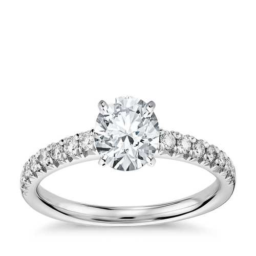
Halo
Pros of Halo Settings
Boosts the appearance of a smaller Carat center diamond
Enhances overall sparkle due to surrounding stones
Securely holds and protects the center stone
Supports and complements a variety of Diamond Shapes
Contrast can be built with a halo of colored metal or
gemstones
Cons of Halo Settings
Tiny side stones may become loose
Resizing can be difficult depending on the number of side stones
that line the band
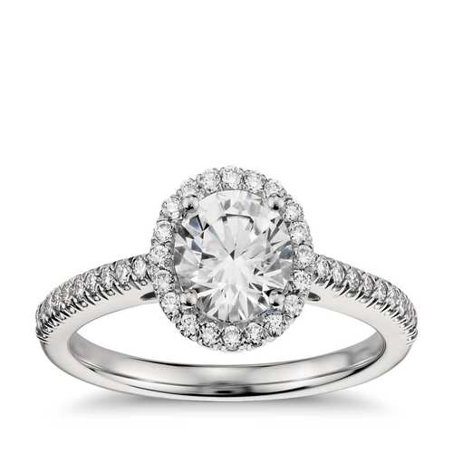
Cathedral
Pros of Cathedral Settings
Accentuates and highlights the center stone
Offers a unique and eye-catching design
Holds the center stone securely
Adds height and character with minimal expense
Can make the center stone seem larger and more prominent
Cons of Cathedral Settings
Can snag on clothes, furniture and other materials if high-set
Less streamlined than other settings like a bezel setting
Requires more time and effort to clean due to number
of crevices
According to some, the curved features can distract from the
center stone’s beauty if poorly designed
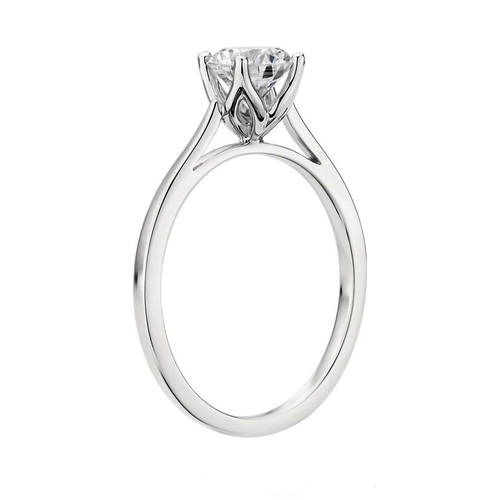
Bar
Pros of Bar Settings
Offers better visibility to diamonds than a channel setting
(due to less metal)
Functions as a stackable ring, simple band or one with
a stunning center stone
Securely holds stones in place with metal bars
Amplifies sparkle as stones are more exposed
Cons of Bar Settings
Slightly less secure than a channel setting
Resizing can be more challenging or costly
Because stones are less protected by metal, there is a slightly
higher chance of chipping
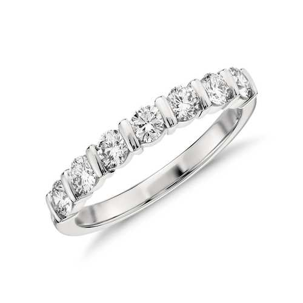
Flush
Pros of Flush Settings
Affords active wearers the highest security, especially
to those who work with their hands
Offers a sleek, polished, simple look
Delivers peace of mind, knowing the stone is highly unlikely
to loosen or fall out
Provides significant protection to diamonds and other stones
Highly functional and practical
Cons of Flush Settings
Reduces visibility of the stone
Limits the amount of light that passes through the stone (decreasing
brilliance and fire)
Less likely to catch someone’s immediate attention
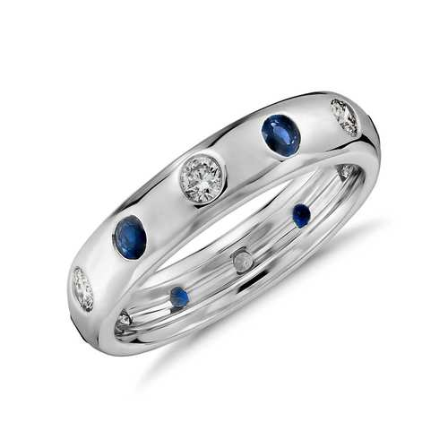
Three Stone
Pros of Three Stone Settings
Maximizes on sparkle and brilliance
Allows for multiple larger stones (including ones of
different colors)
Enhances appearance of center stone when paired properly with
side stones
Provides opportunity for personalization and color contrast
Can achieve greater surface area of gemstone than a singular
setting
Cons of Three Stone Settings
Requires more cleaning and maintenance than a single stone design
When paired poorly, the two side stones can overpower or
distract from the beauty of the center stone
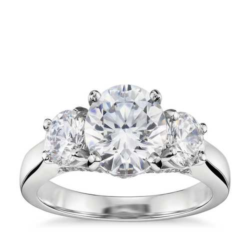
Antique
Pros of Antique Settings
Radiates with plenty of character and charm
Unique and intricately built
Enhances the beauty and prominence of the center stone when
well-designed
Can be crafted to match a time period or personal style preference
Cons of Antique Settings
May require more cleaning and maintenance due to intricate design
and crevices
If designed poorly, the setting may distract from the beauty
and sparkle of the stone
If choosing an antique vintage setting—different than a new
ring of antique design—extra time will be needed to ensure it is
secure and well-maintained
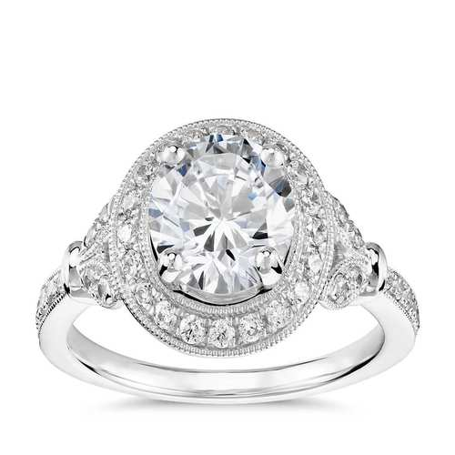
Cluster
Pros of Cluster Settings
Presents as a larger stone even though smaller stones make up
the surface area and size
Emphasizes a unique look with plenty of dimension and
texture
Provides a lower cost option than purchasing a large center
stone
Can be crafted to form a distinct shape
May complement smaller hands or fingers
Cons of Cluster Settings
Often requires more work to clean and maintain, due to number
of stones and crevices
Smaller stones have the possibility of becoming loose and
falling out
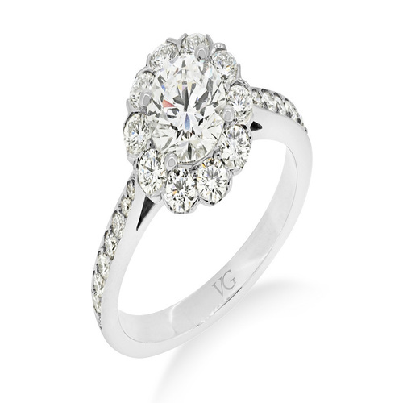
Eternity
Pros of Eterrnity Settings
Delivers a sparkle that circles the entire finger
Adds personality and zest to the alternative simple or metal-only
band
Pairs well with other rings, including engagement rings
and wedding bands
Available in a range of styles, such as bezel and channel
Securely holds smaller diamonds
Cons
Can be difficult or costly to resize (and at times not
possible)
Often requires routine cleaning of crevices and stones to maintain
maximum sparkle
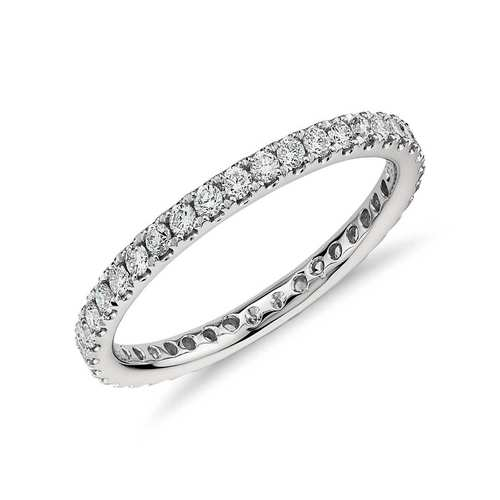
Shank
Pros of Shank Settings
Provides a unique, attention-grabbing appearance
Offers additional surface area to add side stones and sparkle
Leads the eye toward the center stone, making it more prominent
and noticeable
Can be designed for either a modern or classic look
Cons of Shank Settings
Requires more cleaning than simpler settings
Less streamlined design, making it not as practical for those
who do active work with their hands